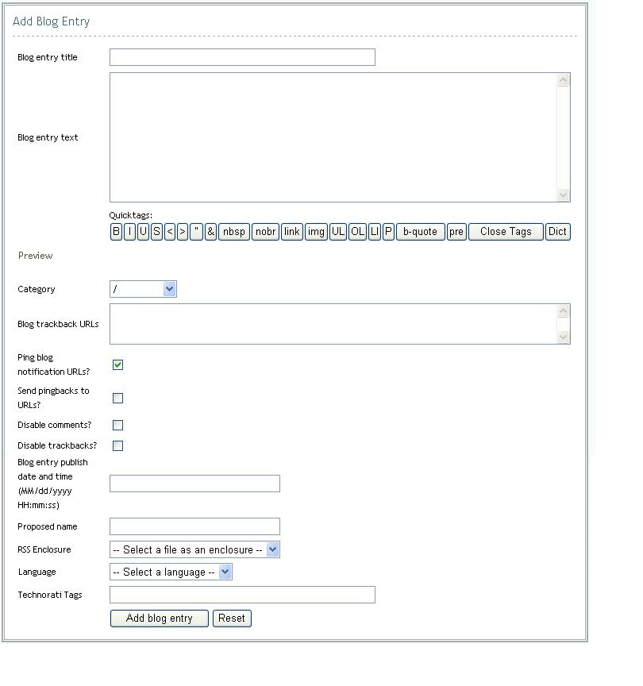

Managing Blog Entries
Adding Entries
Blog Entries are the heart of the blog - delivering the information users want to read. Every blog entry must be organized within a category.
To add a blog entry:
- Click the Add Entry Tab within the Blog Portlet Administrative Console.
- Enter the Blog Entry title.
- Enter the Blog entry text. You can include formatting by inserting quick tags within the entry field.
- Select a category from the category name drop down.
- Enter Blog trackback URLs. (optional)
- Enter Blog ping URLs. (optional)
- Select option to enable or disable comments.
- Select option to enable or disable trackbacks
- Specific the date and time the entry should be published. Use the format MM/dd/yyyy HH:mm:ss (optional)
- Enter a proposed name. (optional).
- Click the Add blog entry button.

Editing Entries
To edit a blog entry:
- Click the Edit Entries Tab within the Blog Portlet Administrative Console.
- Select the category to which the entry has been associated in the Blog Category drop down under the Edit entries in an existing blog category section.
- Click the Edit entries in an existing blog category button.
- Select the item to be edited from the Blog entry drop down under the Edit an entry from ... section.
- Click the Edit blog entry button.
- Make the necessary changes.
- Click the Update blog entry button.
Deleting Entries To delete a blog entry:
|